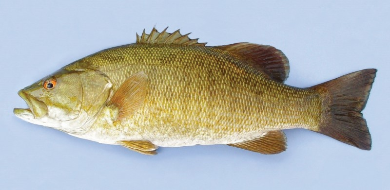
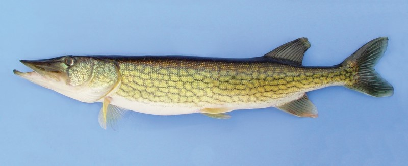
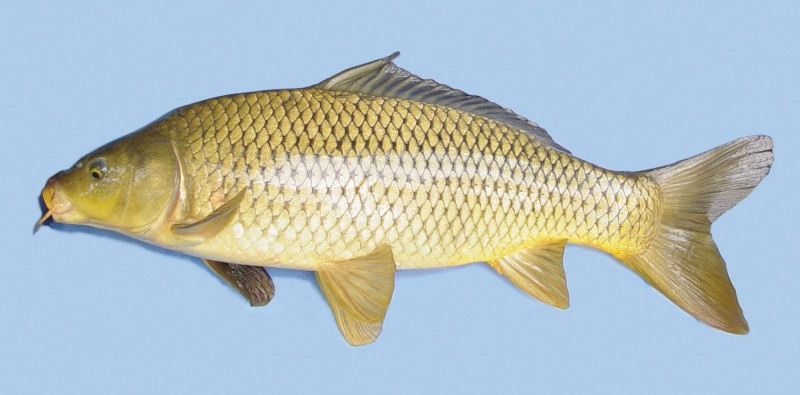
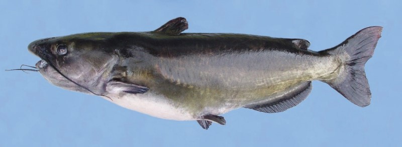
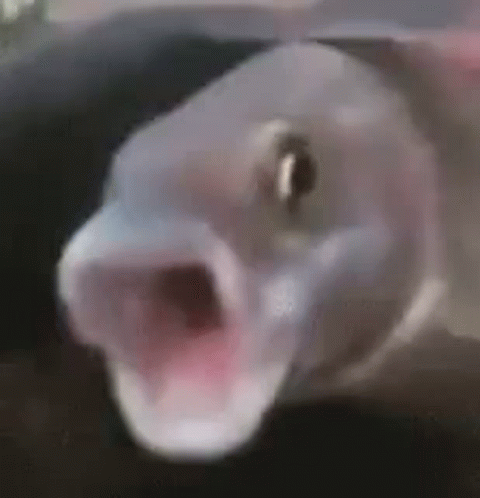

The largemouth Bass is extremely popular for catch and release as well as tournament fishing mainly due to their high population and energetic fights. These fish very greatly in size, with the Massachusetts state record weighing in at over 15 lbs! These fish have no teeth so holding them from their lip is completely safe. You can usually identify these fishing from their distinct dark horizontal stripe that goes from their gills to their tails. They're found locally in pretty much every pond and river that they can fit. The simplest way to hold one is to "lip it" by grabbing it's bottom jaw. If small enough, you can also slide your hand from its head down to it's body and grip it in hand. Make sure as you slide your hand down that you push it's fins down as they are sharp and can poke you.
The Smallmouth Bass is another popular catch and release fish that is very similar to largemouth bass. They behave very similarly in their environment and can sometimes be hard to distinct from their Largemouth counter-parts. The easiest distinction between the two is that Smallmouths usually have a more brown coloring to them and lack the horizontal stripes largemoths do. Some smallmouths also have vertical stripe patterns which can be used to instantly identify them. In general, they don't grow to be as big as Largemouths (the Massachusetts state record is just over 8 lbs), but are still extremely popular due to their high population. You can hold them the same way as a bass.
The Chain Pickerel is another common and popular freshwater catch and release fish. Unlike the previous two fish, these water snakes have razor sharp teeth so they must be handled with extra care. Additionally, they do not have scales and are coated in a layer of mucus making handling them even more tricky. I would recommend avoiding holding them, but if necessary simply grab it's midsection in a firm grip. Be careful not to slide your hand up to the gills since they are sharp and can cut you! The Massachusetts state record for this fish is just over 8 lbs.
The Common Carp is another species found locally here in Lowell. These fish are significantly larger than the previous fish, and are akin to a very large goldfish. Carp are bottom feeders, and are much more skittish making them more difficult to catch compared to the previous species. They are also an invasive species that have assimilated into our environment, infact in some places it's illegal to release them back into the water! However, it is perfectly fine to catch and release Carp here. Carp fishing is extremely popular due to just how massive they can get. The Massachusetts state record for carp is an astonishing 46 lbs! They have no teeth, but because they are so large it is recommended to hold them from their body, basically hugging them to you.
The Channel Catfish is mainly going to be found in the Merrimack river here in Lowell. They are a large scale-less fish that have no teeth so they can be held from their mouths. Personally I don't have a lot of experience fishing for them, but they can grow to be quite large, with the Massachusetts state record coming in at over 26 lbs.
The Funny Fish is a species of fish that is not real and I made it up.